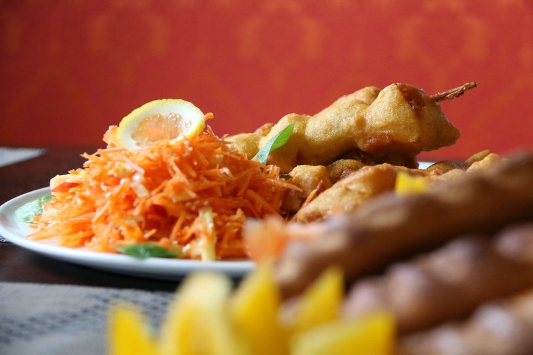
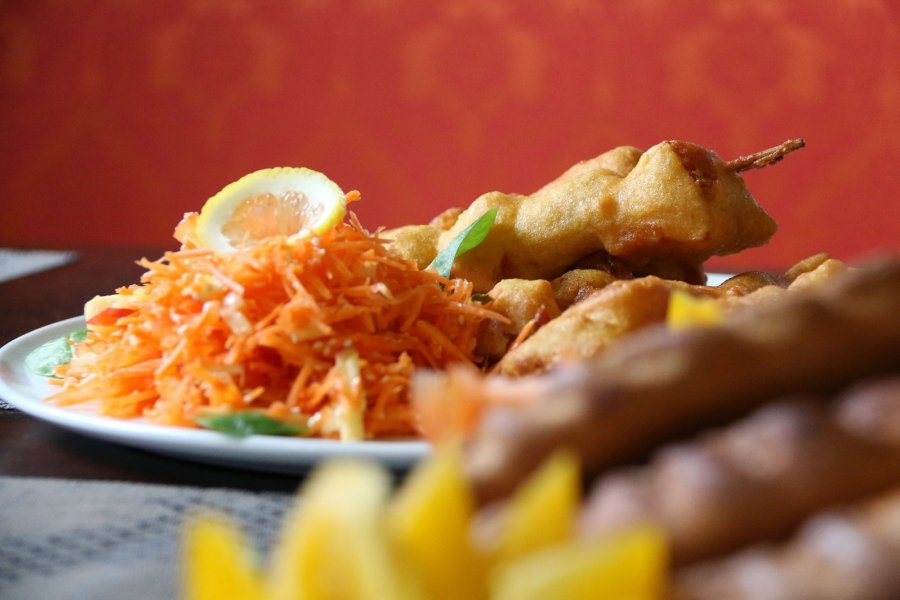

Home | SAKARTVELO
2020.10.27 13:30

Pereiti prie turinio Pagrindinis meniu Užsisakyti! Užsisakyti!
SAKARTVELO
Esame gruziniškas restoranas, teikiantis nuostabų, autentišką gruzinų maistą.
Kokybę „Sakartvelo“ garantuoja rinktiniai produktai ir net tokie niuansai, kaip mėsos paruošimas tik pačių gruzinų, kurių maisto kokybė yra nepalyginamai aukštesnė.
Dabar gruzinišką maistą galite užsisakyti ir į namus!
Užsisakyti! meniuGruzinų restoranas
Kas tas sakartvelo?
Sakartvelo misija – pakeisti Vilniaus gruziniško maisto supratimą iš pagrindų.
Dažnam mūsų kartais tenka ar norisi pavalgyti ką nors ypatingą, kažkas kas yra neįprasta, tačiau kiekvienas mūsų vertiname kokybišką skanų maistą. Būtent dėl šios priežasties Sakartvelo virtuvėje kiekvieną rytą valandų valandas ruošiamės tam, kad per kelias akimirkas pateiktume jums šviežią ir natūralų maistą.
RezervacijaTautiniai patiekalai
Tiesiai iš virtuvės
Visi patiekalai gaminti tikrų gruzinų.
Mūsų restoranų darbuotojai turi didelę darbo patirtį ne tik aptarnaujant klientus, bet ir organizuojant šventes, rengiant furšetus, banketus, įmonės vakarėlius ar organizuojant didesnių grupių maitinimą.
meniuSakartvelo gruzinų restoranas Adresas Linkmenų g. 5, Vilnius Baro t elefonas +370 63811118 Darbo laikas I VI 11 23 VII 11- 22
UAB ,,Sakartvelo maistas“ El. paštas sakartvelomaistas@gmail.com Telefonas +370 68263095
pAVALGYKIME!
Įspūdingų skonių atvykite paragauti ir Jūs!
Rezervacija Facebook-f Google-plus-g Tripadvisor Copyright © 2020 SAKARTVELO Powered by SAKARTVELO- Restoranas - Vanagupė
- Armėniškas restoranas | Grill Patiekalai | Armenian Grill
- Restoranas Natali - Event guru
- Bizarre Restoranas ir Baras - Tavo pasaulis senamiesčio ...
- Restoranas Panevėžyje „Déjà vu“ - Viešbutis „Romantic ...
- Restoranas - Drevernos uostas
- Restoranas - ORO Dubingiai
- Kuchmistrai - Didikų virtuvė
- 30 Geriausių restoranų - 2019 - Nr.1 - Džiaugsmas
- Unikalioje Senamiesčio vietoje įsikūrė naujasis L ...
- Restoranas - Vanagupė
Beje, visi pagrindiniai ingredientai čia yra lietuviški: „Galima sakyti, esame Tymo turgaus restoranas – apie 70 proc. produktų keliauja iš ten“, – išduoda Martynas. Be to, šis restoranas tobulėja ne metais, o mėnesiais: „Pats pastebiu, kad dabar daug geriau vytiname mėsą, rauginame daržoves ir pan.
- Armėniškas restoranas | Grill Patiekalai | Armenian Grill
Restoranas. Europietiškų tradicijų virtuvė, vertinantiems gurmanišką ir sveiką maistą . Kviečiame apsilankyti jaukiame restorane, kuris puikiai įvertintas nuolatinių mūsų svečių. Rytais čia kviečiame paskanauti gausių ir gardžių pusryčių, dienos metu greitai papietauti, vakare – jaukiai pasimėgauti europietiškos ...
- Restoranas Natali - Event guru
ŠEŠTADIENIAIS restoranas nedirba, bet savo siūlomus DIENOS PIETŲ patiekalus, užsakytus per www.MOKSLININKU.lt svetainę, pristatome beveik KIEKVIENĄ DIENĄ (I-VI) nuo 11 iki 17 val. Pagrindiniai patiekalai. Vištienos kumpeliai. € 3.90. saldžiarūgščiame padaže, pateikiami su ryžiais.
- Bizarre Restoranas ir Baras - Tavo pasaulis senamiesčio ...
Esame armėniškas restoranas kuriame teikiami nuostabūs armėniško tipo grill patiekalai. Štai delfi nuoroda, kurioje yra aprašytas apsilankymas mūsų restorane – Staipsnis 1. Taip pat mūsų šefai yra puikūs savo srities ekspertai, kurie puikiai žino apie nuostabų maistą.
- Restoranas Panevėžyje „Déjà vu“ - Viešbutis „Romantic ...
Sveiki atvykę! Restoranas „KUCHMISTRAI“ – autentiškoje Zyplių dvaro aplinkoje įkurtas ir Lietuvos didikų virtuvės paveldą puoselėjantis restoranas, siekiantis išsaugoti ne tik kulinarinį, bet ir kultūrinį krašto paveikslą.
- Restoranas - Drevernos uostas
Restoranas Galerija Kviečiame apsilankyti restorane „Dreverna“ , kuriame rafinuotas patiekalų meniu ir elegantiškas pateikimas nustebins ir pakerės, o dauguma mūsų žuvies patiekalų gaminami iš šviežios, vietos žvejų sugautos žuvies.
- Restoranas - ORO Dubingiai
SAKARTVELO Esame gruziniškas restoranas, teikiantis nuostabų, autentišką gruzinų maistą. Kokybę „Sakartvelo“ garantuoja rinktiniai produktai ir net tokie niuansai, kaip mėsos paruošimas tik pačių gruzinų, kurių maisto kokybė yra nepalyginamai aukštesnė. Dabar gruzinišką maistą galite užsisakyti ir į namus! Užsisakyti! meniu Gruzinų restoranas Kas tas sakartvelo?
- Kuchmistrai - Didikų virtuvė
Restoranas „Onorė“ pasitiks nuo pat ankstyvo ryto ir bus pasiruošęs Jus palepinti. Nesvarbu, ar tai darbingos dienos pradžia su puodeliu stipraus espresso, ar tingūs savaitgalio pusryčiai su čia pat iškeptomis bandelėmis ir garuojančiu omletu.
- 30 Geriausių restoranų - 2019 - Nr.1 - Džiaugsmas
2018-06-20 Paskelbtas geriausias pasaulio restoranas, o jau kitą savaitę paaiškės ir Lietuvos Vakar Ispanijos Bilbao mieste nuaidėjo pasaulio restoranų apdovanojimų ceremonija. Specialaus renginio metu buvo paskelbtas kasmetinis 50 geriausių pasaulio restoranų sąrašas (The World‘s 50 Best Restaurants), o pirmoje vietoje šiemet ...
- Unikalioje Senamiesčio vietoje įsikūrė naujasis L ...
Bizarre restoranas yra įsikūręs pačioje senamiesčio širdyje. Trys skirtingos virtuvės - trys skirtingos patirtys ir nepamirštami įspūdžiai.
Beje, visi pagrindiniai ingredientai čia yra lietuviški: „Galima sakyti, esame Tymo turgaus restoranas – apie 70 proc. produktų keliauja iš ten“, – išduoda Martynas. Be to, šis restoranas tobulėja ne metais, o mėnesiais: „Pats pastebiu, kad dabar daug geriau vytiname mėsą, rauginame daržoves ir pan.
Restoranas. Europietiškų tradicijų virtuvė, vertinantiems gurmanišką ir sveiką maistą . Kviečiame apsilankyti jaukiame restorane, kuris puikiai įvertintas nuolatinių mūsų svečių. Rytais čia kviečiame paskanauti gausių ir gardžių pusryčių, dienos metu greitai papietauti, vakare – jaukiai pasimėgauti europietiškos ...
ŠEŠTADIENIAIS restoranas nedirba, bet savo siūlomus DIENOS PIETŲ patiekalus, užsakytus per www.MOKSLININKU.lt svetainę, pristatome beveik KIEKVIENĄ DIENĄ (I-VI) nuo 11 iki 17 val. Pagrindiniai patiekalai. Vištienos kumpeliai. € 3.90. saldžiarūgščiame padaže, pateikiami su ryžiais.
Esame armėniškas restoranas kuriame teikiami nuostabūs armėniško tipo grill patiekalai. Štai delfi nuoroda, kurioje yra aprašytas apsilankymas mūsų restorane – Staipsnis 1. Taip pat mūsų šefai yra puikūs savo srities ekspertai, kurie puikiai žino apie nuostabų maistą.
Sveiki atvykę! Restoranas „KUCHMISTRAI“ – autentiškoje Zyplių dvaro aplinkoje įkurtas ir Lietuvos didikų virtuvės paveldą puoselėjantis restoranas, siekiantis išsaugoti ne tik kulinarinį, bet ir kultūrinį krašto paveikslą.
Restoranas Galerija Kviečiame apsilankyti restorane „Dreverna“ , kuriame rafinuotas patiekalų meniu ir elegantiškas pateikimas nustebins ir pakerės, o dauguma mūsų žuvies patiekalų gaminami iš šviežios, vietos žvejų sugautos žuvies.
SAKARTVELO Esame gruziniškas restoranas, teikiantis nuostabų, autentišką gruzinų maistą. Kokybę „Sakartvelo“ garantuoja rinktiniai produktai ir net tokie niuansai, kaip mėsos paruošimas tik pačių gruzinų, kurių maisto kokybė yra nepalyginamai aukštesnė. Dabar gruzinišką maistą galite užsisakyti ir į namus! Užsisakyti! meniu Gruzinų restoranas Kas tas sakartvelo?
Restoranas „Onorė“ pasitiks nuo pat ankstyvo ryto ir bus pasiruošęs Jus palepinti. Nesvarbu, ar tai darbingos dienos pradžia su puodeliu stipraus espresso, ar tingūs savaitgalio pusryčiai su čia pat iškeptomis bandelėmis ir garuojančiu omletu.
2018-06-20 Paskelbtas geriausias pasaulio restoranas, o jau kitą savaitę paaiškės ir Lietuvos Vakar Ispanijos Bilbao mieste nuaidėjo pasaulio restoranų apdovanojimų ceremonija. Specialaus renginio metu buvo paskelbtas kasmetinis 50 geriausių pasaulio restoranų sąrašas (The World‘s 50 Best Restaurants), o pirmoje vietoje šiemet ...
Bizarre restoranas yra įsikūręs pačioje senamiesčio širdyje. Trys skirtingos virtuvės - trys skirtingos patirtys ir nepamirštami įspūdžiai.
 
